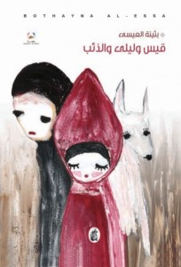

قيس وليلى والذئب

هذا هو الكتاب الخامس للكاتبة الكويتية "بثينة عيسى" بعنوان "قيس وليلى والذئب". تضمن الكتاب مجموعة نصوص نثرية تراوحت ما بين السرد والشعر، كتبتها المؤلفة في مرحلة ما بين 2003- 2011؛ وهي نصوص تقترب فيها المؤلفة من الذات الإنسانية وتجمع بينها التأملات الإنسانية، والحس المرهف وخيوط من الحكاية الرشيقة.
وجاء هذا العمل في 5 أبواب حمل أولها عنوان: "حروفٌ مخلوعة بين جسد الحكاية"، تندرج تحته عناوين أخرى تعبر عن حالات إجتماعية مثل الشيخوخة ففي نص "جدوى" تسأل ليلى جدتها: "لماذا يدكِ ضعيفة وهزيلة يا جدّتي؟... لأنني عجوز... ولماذا عينك ضعيفة وصغيرة يا جدتي؟... لأنني عجوز... ولماذا فمكِ بلا أسنان يا جدتي؟... لأنني عجوز"... مشت ليلى بطول الغابة تتساءل بأسى، ما نفع الحياة لشخص عجوز، ألم يكن أفضل... لو أن الذئب أكل الجدّة؟!...
أما الباب الثاني: فعنون: "ما زلنا نبرح الأمثال ضرباً" نقتبس منه نص "حجر" حيث يحكى قصة زهرة نبتت بين حجرين كبيرين، كان الحجران كبيرين لدرجة أنهما حجبا عنها كل ما في الجوار، لم تكن الزهرة تلتقي بالعشب، أو الأرانب، أو الأشجار، أو العصافير، أو السناجب، أو الجداجد، أو أقاربها من الأزهار، لم تحادث أحداً ولم يتحدث إليها أحد، لم تر الزهرة شيئاً بإستثناء الحجرين الكبيرين، والسماء من فوقها؛ بعد أيام، ذبلت الزهرة وماتت، ماتت معتقدة بأنها أيضاً... "حجرْ".
وعنون الباب الثالث: "نزيفٌ داخلي" واندرجت تحته نصوصاً مثل: "الكاتب"، "قصيدة"، "جنة الشاعر"، في حين جاء الباب الرابع بعنوان: "الغابة مرة أخرى الذئاب تنضج على الأشجار"، تعرض فيها الكاتبة مواضيع جدلية متواجدة منذ الأزل منها فكرة فارس الأحلام ذلك الشاب الوسيم الذي يخترق السحاب، متمطياً صهوة جواده الأبيض، ليختار فتاته، ويطير بها إلى عالم الأحلام، فنجدها تنتقد هذا الواقع بنص بعنوان: "فارس الأحلام" حيث تقول: "إنه قد يجيء في أيّ وقت، في أي ليل، في أي حلم... وعندما يجيء سيكون من المضحك أن أقول له، قيس يا حبيبي! أنتظرني عشر دقائق أخرى ريثما أتأهّب!... ينبغي أن يكون فستاني جاهزاً، وأن يكون جواز السفر في جيبي على الدوام، ماذا سأفعل لو أخبرني بأننا سنتعشى في باريس ولم يكن الجواز معي؟ أحتاجُ احمر شفاه، وزجاجة عطر، ومنديلاً... ماذا لو جرح إصبعه ولم يكن معي منديل؟ أي حمقاء سأبدو؟ يجب أن يكون كل شيء جاهزاً منذ الآن، منذ الآن وإلى الأبد!".
... كل ليلة، تملأ ليلى كيس الوسادة بفستان ومنديل وزجاجة عطر وجواز سفر، تنام متوسدة فستاناً ومنديلاً وعطراً وجواز سفر، تحلمُ به يجيء ويجدها في إنتظاره... كانت ليلى مستعدة على الدوام، على الدوام! تراه كان مستعداً - أيضاً - قبل أن يختفي من أحلامها إلى الأبد؟...
أما الباب الرابع فجاء بعنوان: "أرجوحة السماء" اشتمل على سبعة نصوص مثل "حلم العالم"، "رتق"، "فصام"؛ أما الباب الخامس والأخير بعنوان: "زمن الحليب" تحدثت فيه المؤلفة عن الأم ففي نص "أمومة"... "من فرط أمومتها، كان تحاصر حضورها بالمرايا، ليرى الطفل بأن له عدداً لا يحصى من الأمّهات اللواتي يحببنه ويرعينه ويحتضنه ويحمينه ويحطنَ به في كل وقت، لكي لا يقلق بخصوص نضوب الأمومة من الوجود لأن رصيده منها أزلي، مثل مرآة في وجه مرآة..